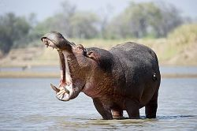
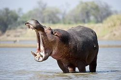

Lac de Tingrela
 
D'une longueur de 7 km et d'une largeur de 1 km maximales, le lac a une superficie de 580 ha. Son émissaire rejoint la Comoé à leur confluence située à environ 3 km au sud-est. Le lac est protégé par la convention de Ramsar depuis le 7 octobre 2009.
Le lac est un site de pêche traditionnel des habitants du village de Tengréla. En raison de la proximité de la ville de Banfora, une petite économie du secteur du tourisme, principalement interne au pays2, s'est développée depuis les années 2000 au campement Kegnigohi qui propose des hébergements et de la location de véhicules.

D'une longueur de 7 km et d'une largeur de 1 km maximales, le lac a une superficie de 580 ha. Son émissaire rejoint la Comoé à leur confluence située à environ 3 km au sud-est. Le lac est protégé par la convention de Ramsar depuis le 7 octobre 2009.
Le lac est un site de pêche traditionnel des habitants du village de Tengréla. En raison de la proximité de la ville de Banfora, une petite économie du secteur du tourisme, principalement interne au pays2, s'est développée depuis les années 2000 au campement Kegnigohi qui propose des hébergements et de la location de véhicules.